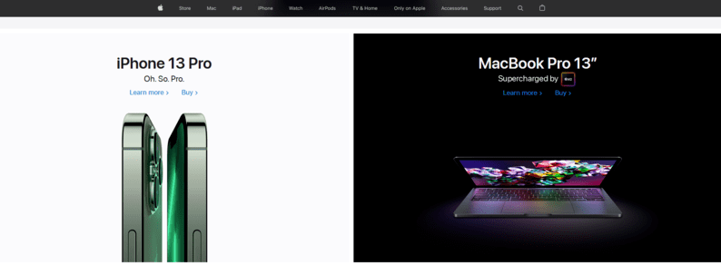
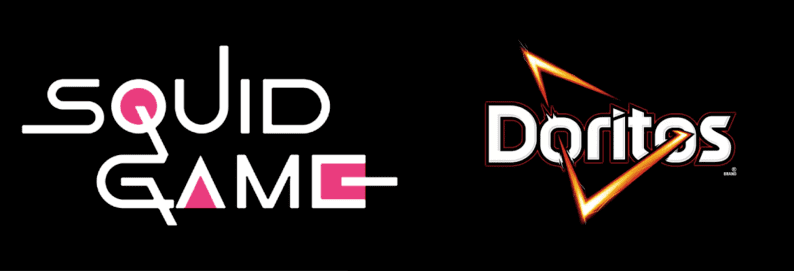
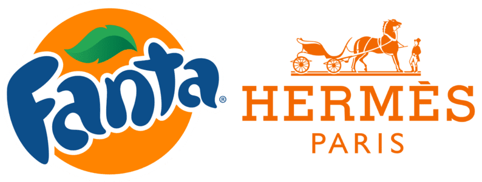
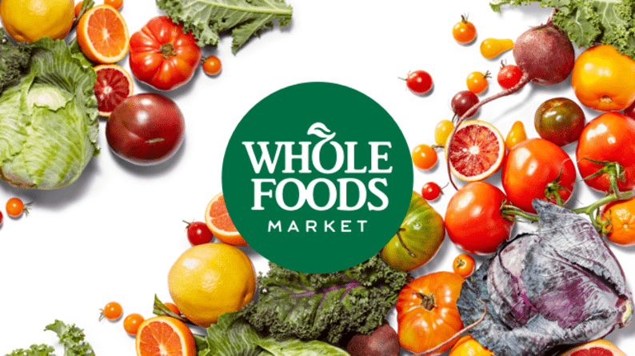
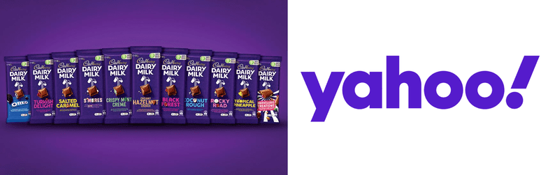
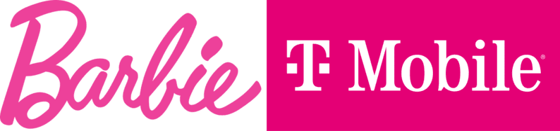
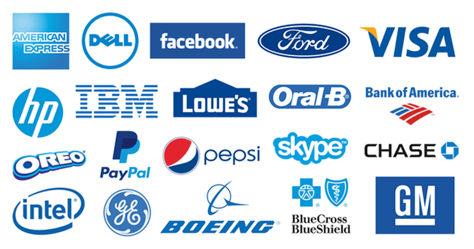

Бирюзовый цвет Tiffany, розовый Barbie или фиолетовый Cadbury настолько узнаваемы, что даже зарегистрированы как торговые марки. Они помогают отличить бренды от конкурентов, привлечь целевую аудиторию и донести до нее нужный месседж.
Как фирменный цвет влияет на восприятие компании? С чем ассоциируются разные оттенки? И как правильно выбрать цвет при разработке брендинга? На все вопросы отвечаем в статье.
Что такое психология цвета и как она работает
Оглянитесь вокруг: какие цвета вы видите? Будь то красная чашка, синяя брошюра или зелень за окном, каждый из этих оттенков вызывает у вас определенные чувства и эмоции. Субъективное значение, которое люди придают разным краскам, изучает психология цвета.
Ученые утверждают, что на восприятие цветов влияют три фактора:
- Биология. Ассоциации, которые заложены в нас генетически: к примеру, красный (цвет огня) напоминает о страсти и энергии, а зеленый (цвет растений) — о природе.
- Социокультурный контекст. Регион проживания, пол, возраст тоже влияют на восприятие цветов. Так, в восточной культуре красный означает благополучие, а в западной — сексуальность, агрессию, энергию. Голубой любят в США, зато в Азии он ассоциируется со злом.
- Личный опыт. Образ жизни, пережитые события или сильные эмоции могут полностью изменить представление о цвете: к примеру, несчастный случай на воде может вызвать негативные ассоциации с голубым оттенком.
Почему выбор цвета важен для брендов
Цвета влияют на эмоции потребителей, в том числе, при формировании отношения к компании и принятии решения о покупке:
- Узнаваемость. Цвет может увеличить узнаваемость бренда на 80 процентов. McDonald’s прочно ассоциируется у нас с золотыми арками, а Starbucks — с темно-зеленой русалкой. Важно, чтобы фирменный цвет повторялся во всех точках контакта с аудиторией: от визитки до оформления интерьера магазина.
- Отстройка от конкурентов. Исследования показали: потребители лучше распознают и запоминают визуальные элементы, которые выделяются на общем фоне. Хотите, чтобы ваш бренд отличали от других? Выбирайте оттенки, которые не используют конкуренты.
- Повышение продаж. Цвет влияет на 85 процентов решений о покупке, поэтому правильная работа с фирменными цветами может быть связана с прибылью компании.
Что означают популярные цвета и как их используют бренды
Ниже мы расскажем о цветовых ассоциациях, но стоит помнить, что это — только информация к размышлению. Как вы будете ее использовать — зависит от характера бизнеса, целевой аудитории и выбора конкретных оттенков.
Белый
Чистота, нежность, целомудрие, благородство
Цвета влияют на эмоции потребителей, в том числе, при формировании отношения к компании и принятии решения о покупке:
-
Apple: черно-белая гамма сайта и белая упаковка подчеркивают лаконичный дизайн продуктов;

-
Tesla: красно-белый логотип в виде электромотора выгодно отличает компанию от конкурентов,
которые предпочитают более сдержанные цвета;
-
Crocs: черно-белый логотип передает простоту дизайна обуви и инновации, которые внедряет
бренд;
- Pepsi: красно-бело-синий логотип, появившийся еще в 40-х годах, отсылает к цветам американского флага.
Черный
Эксклюзивность, сила, шик, ценность, элегантность
Еще один универсальный цвет, который часто используют дизайнеры. Все зависит от контекста, в который его помещают:
-
Chanel, Dior, Marc Jacobs: люксовые бренды предпочитают черно-белую гамму, которая призвана
передать стиль и роскошь, с которой они ассоциируются;
-
«Игра в кальмара»: черный выбран как фон для
логотипа популярного сериала. Во-первых, он задает
тревожное настроение, а во-вторых, создает нужный контраст для надписи в белых и розовых
цветах;

- Doritos: задача лого в виде черного треугольника с оранжевой окантовкой — представить бренд как динамичный и вдохновляющий, чтобы достучаться до молодежной целевой аудитории.
Серый
Формальность, надежность, спокойствие, сдержанность
Серый цвет практически лишен эмоций, поэтому подойдет не каждому бренду. В последнее десятилетие серый металлик стали часто использовать технологичные и автомобильные компании:
- Apple: серый логотип отлично дополняет черно-белую гамму фирменного стиля и подчеркивает материалы, из которых сделаны продукты;
-
Microsoft: серая надпись в лого выгодно оттеняет значок с четырьмя разноцветными квадратами и
отсылает к технологичности бренда;
- Mercedes: эмблема в цвете металлик отражает приверженность компании современным трендам устойчивости, экологичности, минимализма (подобный фирменный стиль сегодня выбирают многие автомобильные бренды, включая Honda, Mini и другие).
Красный
Энергия, любовь, страсть, агрессия, провокация, опасность
Один из самых мощных инструментов брендинга, который однозначно работает на привлечение внимания: достаточно вспомнить красный знак «Stop» на дороге или объявления о скидках. Этим инструментом активно пользуются бренды:
-
KFC: считается, что красный разжигает аппетит, поэтому его выбирают большинство ресторанов
быстрого питания;

-
Netflix: красная эмблема призвана привлечь пользователей на платформу, передать страсть,
энергию
и сильные эмоции, которые они испытают от контакта с брендом;
- ExxonMobil: в красно-белом логотипе одной из богатейших нефтяных компаний мира красный символизирует решительность и благополучие.
Желтый
Счастье, радость, позитив, мотивация, креативность
Желтый напоминает о солнце, а значит, однозначно вызывает позитивные ассоциации. Бренды используют его для привлечения внимания и передачи положительных эмоций:
-
McDonald’s: знаменитые золотые арки отсылают к реальным конструкциям, которые обрамляли
первые
закусочные McDonald’s и были призваны привлекать внимание издалека;

- Best Buy: черно-желтый логотип ритейлера отлично запоминается благодаря контрасту и помогает компании отстроиться от конкурентов.
Оранжевый
Оптимизм, жизненная сила, веселье, активность, дружелюбие
Как и красный, оранжевый привлекает внимание, но не выглядит таким агрессивным. Бренды используют его в качестве основного или акцентного цвета:
-
Fanta: оранжевый апельсин, выбранный фоном для эмблемы, отсылает ко вкусу напитка и
напоминает о
яркости и веселье, с которыми ассоциируется бренд;

-
Hermes: мягкий оттенок оранжевого — редкость для люксовых брендов. Такой выбор связан с
историей
компании: оранжевый был единственным доступным цветом для упаковки во время Второй мировой
войны.
- Amazon: цвет лого означает дружелюбие, удачно дополняет символ компании — улыбку — и слоган: «Доставляем улыбки к дверям»;
Коричневый
Стабильность, поддержка, практичность, натуральность
Коричневый цвет нечасто используют в айдентике: есть риск, что он будет выглядеть чересчур скучно и безлико. Поэтому лучше комбинировать его с другими оттенками:
-
UPS: коричнево-золотистая цветовая гамма отсылает к стабильности и надежности бренда, что
усиливает символ в виде щита;
- M&M’s: цвет эмблемы напрямую ассоциируется с основным продуктом компании — шоколадными конфетами.
Зеленый
Природа, рост, возрождение, процветание, здоровье
У зеленого цвета множество ассоциаций. Все зависит от того, какой оттенок вы выберете: нежные оттенки ассоциируются с натуральностью, экологией, устойчивостью, а темные — с деньгами и стабильностью. Кроме того, считается, что зеленый успокаивает и расслабляет:
-
Whole Foods Market: зеленая эмблема сети супермаркетов означает натуральность продуктов,
которые
там продаются;

-
Starbucks: знаменитая зеленая русалка напоминает о водной стихии (компания родилась в
портовом
Сиэтле и была названа в честь одного из героев романа «Моби Дик»);
- Spotify: неоново-зеленый оттенок эмблемы отсылает к технологичности компании.
Фиолетовый
Власть, роскошь, престиж, духовность, мистика
Значение цвета сложилось исторически: пурпурный краситель был доступен только самым богатым, а потому стал ассоциироваться с властью. Тем не менее, сегодня оттенки фиолетового используют самые разные бренды:
-
Cadbury: основатели британского кондитерского бренда выбрали фиолетовый цвет как дань
уважения
королеве Виктории;

- Yahoo: фирменный цвет появился благодаря краске для стен, которой красили первый офис компании.
Розовый
Власть, роскошь, престиж, духовность, мистика
Розовый — неоднозначный цвет для брендинга: при неправильном использовании он может создать чересчур инфантильный образ компании и оттолкнуть пользователей. Выбирая этот цвет, важно помнить о целевой аудитории
-
Barbie: розовый лого отсылает к детству, что органично для бренда игрушек;

- T-Mobile: оттенок мадженты, который выбрала технологичная компания, отсылает к функциональности, футуристичности и ярким эмоциям, которые дает связь нового поколения.
Синий
Спокойствие, интеллект, глубина, сила, ответственность, надежность
Благодаря универсальности синий — самый популярный цвет в логотипах известных брендов:
- Facebook, Twitter, Linkedin: социальные сети выбирают преимущественно синий цвет как символ надежности и защиты данных;
-
Intel, Samsung, IBM: синий предпочитают технологические корпорации, подчеркивая интеллект и
профессионализм;

- Procter & Gamble: в этом случае цвет символизирует заботу о потребителях и безопасность продукции.
Мультиколор
Креатив, творчество, игривость
Сочетание разных цветов — отличный способ выделиться и привлечь аудиторию. Символизм зависит от сочетаний, которые выбирает бренд:
-
Google: разные цвета отражаю приверженность компании творчеству, технологиям и
индивидуальному
подходу;
- NBC: лого в виде павлина с разноцветным хвостом появился в 50-х годах, чтобы стимулировать аудиторию покупать цветные телевизоры.
От чего зависит выбор цвета для бренда
Дать универсальные советы по выбору фирменного цвета невозможно — это зависит от множества факторов. Назовем основные, на которые стоит опираться:
- Месседж, который вы хотите донести до потребителей. Цвет должен подчеркивать индивидуальность бренда. Поэтому первый вопрос, который стоит себе задать: каков характер вашей компании и что вы хотите сообщить пользователям? После этого подключайте к работе дизайнера или сами изучайте психологию цвета и палитру известных брендов (это можно сделать на сайте BrandColors).
- Портрет целевой аудитории. Личные предпочтения, опыт, воспитание, культурные различия и контекст искажают влияние, которое цвета оказывает на разных людей. Поэтому вам нужно четко знать свою аудиторию: начиная от пола и возраста и заканчивая желаниями и страхами.
- Уместность цвета. Исследования показали, что восприятие цвета во многом зависит от его уместности. Поэтому, выбирая палитру, стоит задать себе вопрос: отвечает ли фирменный цвет тому, что вы продаете?
- Цветовые комбинации. Используя несколько цветов сразу, важно знать, как работают разные сочетания. О правилах подбора цветовых комбинаций вы можете подробно прочитать в нашей статье, а выбрать подходящую палитру за пару минут — при помощи онлайн-конструктора Logaster.
Заключение
От фирменных цветов во многом зависит, как аудитория воспримет бренд, насколько хорошо запомнит и захочет ли купить продукт. На выбор палитры влияют десятки факторов, поэтому стоит детально изучить их, прежде чем создавать фирменный стиль. Избежать ошибок помогут доскональное знание индивидуальности бренда и целевой аудитории.